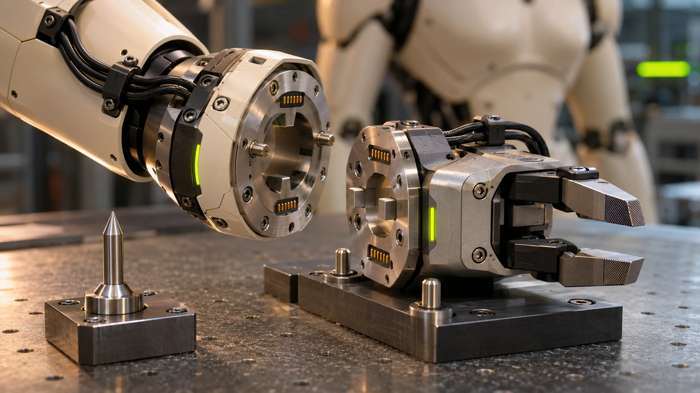

Treat a tool change as a configuration change. Mechanical attachment, the active tool frame and the load record answer different questions and should be reviewed together.
A humanoid removes a gripper and picks up an inspection tool. The new accessory appears to fit, but its working point sits somewhere different from the old fingertips. A program that still uses the earlier geometry may therefore describe the wrong physical point. The same change can also alter the mass carried by the wrist, the location of that mass and the utilities crossing the interface. This guide proposes a practical configuration handoff for an integration team. It does not provide a mounting procedure, establish accessory compatibility or report an independent tool-change test.
Give the complete tool assembly an identity
Start with a tool record that describes the assembly actually attached to the robot. Include the end effector, adapter, tool-side coupling, brackets, cables and any other parts carried with it. Record part references, drawing revisions and photographs that distinguish similar-looking variants. A label such as 'inspection tool' is useful in conversation but insufficient when two probes have different lengths or mounting arrangements.
Assign an identifier that connects the physical assembly to its software configuration and maintenance history. Decide who may approve a revision, and preserve the previous record when the assembly changes. A replacement adapter or an added sensor can create a different configuration even when the main tool keeps its product name. The record should let another engineer determine which assembly the current robot program expects, without reconstructing that answer from a demonstration video.
Separate mechanical fit from an accepted interface
Gather the documentation for the exact coupling and mounting arrangement. Identify whether the proposed process uses a manual exchange or an automatic changer, and review the relevant manufacturer procedure with the responsible integrator. The existence of matching-looking faces or bolt holes does not establish that two assemblies form an approved combination. Keep any custom adaptation and its acceptance decision visible in the project record.
ATI describes manual changers as mating master and tool sides, with the master attached to a robot or other structure and the tool side attached to tooling. Its selection guidance also emphasizes moment capacity and the end effector's center of gravity, rather than payload alone. These are useful questions for a supplier discussion. They do not establish that a selected changer is suitable for a humanoid wrist or authorize a procedure copied from another model.
Record the working point and its reference frame
Describe the point and orientation that the application intends to control. For a probe this might relate to its sensing feature; for a gripper it may depend on the application's chosen reference. Record how that definition relates to the robot's flange or other documented reference frame. Keep units, axis conventions and the method used to establish the transform with the tool record. Avoid carrying a convenient offset forward merely because a previous program used it.
The official ROS geometry2 project provides packages for tracking coordinate transforms. A transform system is a way to represent relationships; it is not evidence that an entered relationship matches the installed hardware. Review which component owns the active tool definition and how a tool identity selects it. If the application and controller maintain separate representations, document how those records are checked together. A correct-looking visualization alone does not resolve an unexplained disagreement.

Keep load information beside geometry
Collect the load information required by the robot and changer manufacturers for the complete carried assembly. Distinguish a tool's own mass from an object it may hold, and identify the configuration to which any center-of-gravity information applies. An adapter can change the distance between the load and the mounting interface even when the combined mass seems modest. Ask the supplier to review assumptions that the integration team cannot establish from the available documentation.
Keep the source of each value and the accepted configuration with the application record. Do not interpret a nominal payload figure as a complete assessment of orientation, moment or dynamic behavior. ATI's selection page explicitly asks for information about the heaviest end effector and its center of gravity when considering a changer. Applying that information to a particular humanoid installation remains a separate engineering review, including the robot manufacturer's requirements.
Review utilities and state before using the new tool
List the connections that must cross the interface: power, data, air or other services relevant to the chosen equipment. Describe which connections belong to the removable assembly and which remain with the robot. Keep connector identification and software interface revisions alongside the mechanical drawings. A tool can be physically present while the application is still communicating with an earlier configuration or waiting for a different device.
Use the exact supplier documentation to define the states that the control system must recognize. Manual and automatic exchange processes may expose different information and require different procedures. Record how tool identity, attachment status and application readiness are established in the installed system. Do not substitute an attractive status light or an assumed timeout for an undocumented readiness decision. Unresolved behavior should become a supplier question before the tool enters the intended task.
Commission the accepted configuration and preserve the result
Prepare a review with the responsible integrator under the robot manufacturer's supported commissioning conditions. Confirm the installed tool identity, selected geometry, relevant load record and required utility state before the agreed application check. Record what was observed and the configuration under which it occurred. A simple reference fixture can help make a geometry question repeatable, but the fixture and method must be appropriate to the installation rather than borrowed as a universal calibration procedure.
Keep the result with the tool record, including deviations, interventions and remaining limitations. Define which later changes require another review, such as a different adapter, repaired tool, revised software interface or new carried object. The useful outcome is an assembly that can be identified and evaluated again. That makes removable tooling a maintained capability of the humanoid application, with a clear handoff between purchasing, engineering, operations and the supplier.
Your next step.
- Identify the complete carried tool assembly and its revision.
- Connect physical tool identity to the active software configuration.
- Record the working point, reference frame, units and transform source.
- Review the complete load and required utilities with the suppliers.
- Preserve commissioning evidence and define when another review is needed.
Sources & further reading
Primary sources and manufacturer documentation for the examples and further investigation. Recommendations in this article are HUMANOID’s editorial guidance.
ATI: tool changer selection guidance ↗ATI: manual tool changer interfaces ↗ROS geometry2: official coordinate-transform packages ↗Prepared and references reviewed: 17 November 2026. This original practical guide does not report an independent hardware test. Follow the exact manufacturers' procedures for mounting, configuration and commissioning.